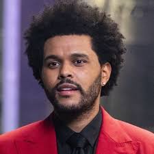

THE WEEKND

Quem é The Weeknd?
Abel Makkonen Tesfaye, mais conhecido por seu nome artístico The Weeknd, é um cantor, compositor, ator e produtor musical canadense.
Conhecido por sua versatilidade sonora e lirismo sombrio, suas músicas exploram temas de escapismo, romance e melancolia, e é frequentemente inspirada em experiências pessoais.
Prêmios do The Weeknd
- Juno Award: Artista Revelação do Ano (2013)
- BET Award: Prêmio Centric - Earned It (2015)
- YouTube Music Award (2015)
- MuchMusic Video Award: Melhor Diretor do Ano - Often (2015)
- MuchMusic Video Award: Clipe do Ano - Often (2015)
- MuchMusic Video Award: Melhor vídeo internacional de um canadense - Earned It (2015)
- MuchMusic Video Award: Clipe Pop do Ano - Earned It (2015)
- American Music Award de Artista Masculino de Soul/R&B Favorito (2015)
- American Music Award de Melhor Álbum de Soul/R e B - Beauty Behind the Madness (2015)
- Grammy Award: Melhor Álbum Urbano Contemporâneo (2015)
- Grammy Award: Melhor Performance de R&B - Earned It (2016)
- Juno Award: Single do Ano - Can't Feel My Face (2016)
- MTV Europe Music Award para Melhor Vídeo - Starboy (2016)
- Juno Award: Álbum do Ano - Beauty Behind the Madness (2016)
- Prêmio Billboard: Melhor Álbum R&B - Beauty Behind the Madness (2016)
- Juno Award: Compositor do Ano - Dawn FM (2016)
- Juno Award: Artista do Ano (2016)
- Prêmio Billboard: Melhor Artista No Hot 100 (2016)
- Prêmio Billboard: Melhor Artista de Streaming (2016)
- People's Choice Award: Artista de R&B Favorito (2016)
- Prêmio Billboard: Melhor Artista de Rádio (2016)
- iheartradio music award for r&b song of the year - Earned It (2016)
- billboard music award for top song sales artist (2016)
- billboard music award for top r&b male artist (2016)
- Prêmio Billboard: Melhor Música R&B - The Hills (2016)
- Prêmio Billboard: Melhor Música Streaming (Áudio) - The Hills (2016)
- Prêmio Billboard: Melhor Artista R&B (2016)
- MuchMusic Video Award: Melhor Single Canadense do Ano - Can't Feel My Face (2016)
- iHeartRadio Music Award: Artista R&B do ano (2017)
- NRJ Music Award: Prêmio de Honra - (2017)
- Grammy Award: Melhor Álbum Urbano Contemporâneo (Prêmio) (2018)
- Billboard Music Award for Top R&B Male Artst (2019)
- MTV Video Music Award: Clipe do Ano - Blinding Lights (2020)
- MTV Video Music Award: Melhor Clipe de R&B - Blinding Lights (2020)
- Danish Music Award: Sucesso Internacional do Ano (Prêmio) - Blinding Lights (2020)
- NRJ Music Award: Artista Masculino Internacional do Ano (Prêmio) (2020)
- American Music Award de Artista Masculino de Soul/R&B Favorito (2020)
- American Music Award de Melhor Álbum de Soul/R&B - After Hours (2020)
- Prêmio Billboard: Melhor Artista (2021)
- Premio Juventud for OMG Collaboration - Hawái (Remix) (2021)
- Juno Award: Single do Ano - Blinding Lights (2021)
- Prêmio Billboard: Melhor Música Hot 100 - Blinding Lights (2021)
- Prêmio Billboard: Melhor Artista Masculino (2021)
- Juno Award: Álbum do Ano - After Hours (2021)
- Prêmio Billboard: Melhor Álbum R&B - After Hours (2021)
- Juno Award: Compositor do Ano - Blinding Lights, After Hours, Save Your Tears (2016)
- Brit Award: Melhor Artista Solo Masculino Internacional (Prêmio) (2021)
- iHeartRadio Music Award: Música do ano - Blinding Lights (2021)
- Juno Award: Artista do Ano (2021)
- Prêmio Billboard: Melhor Música de Rádio - Blinding Lights (2021)